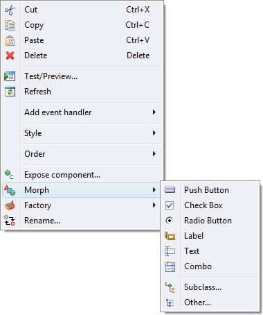

|
It can be frustrating to suddenly want a Group instead of a Composite or a Combobox rather than a List after you have already completed the design of the composite. It is very easy to remedy this using the tool. The editor allows you to morph similar components from one type to another. When a component is morphed from one type to another, the properties that are the same between the two types are kept. This allows quick design changes without having to recreate all the components. To morph a component from one type to another, right-click on the component and select a component type to morph to from the Morph cascading menu. In addition to morphing to common sibling types, you can also morph a component into any subclass or into any other arbitrary component type.
|